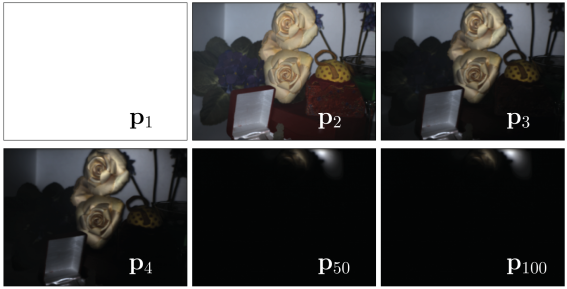
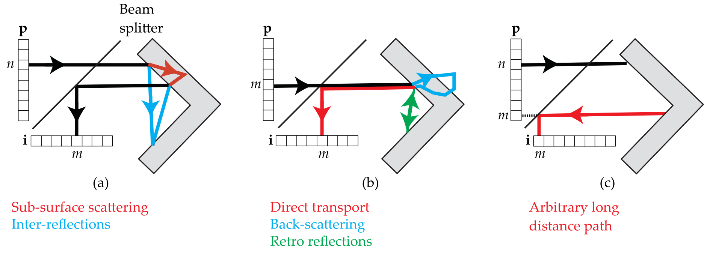

Light Transport Analysis
Contents
\(\begin{align} \newcommand{transp}{^\intercal} \newcommand{F}{\mathcal{F}} \newcommand{Fi}{\mathcal{F}^{-1}} \newcommand{inv}{^{-1}} \newcommand{stochvec}[1]{\mathbf{\tilde{#1}}} \newcommand{argmax}[1]{\underset{#1}{\mathrm{arg\, max}}} \newcommand{argmin}[1]{\underset{#1}{\mathrm{arg\, min}}} \end{align}\)
Computational Imaging
Light Transport Analysis#
Content#
Introduction into light transport
Light transport analysis via optical computing
Primal-Dual coding for optical probing
Introduction into light transport#
Light transport = all light travelling in a scene from illumination sources to sensor elements (i.e., pixels).
Can be mathematically described via the so-called light transport matrix \(\mathbf{T}\), if the common assumption of linear light transport is made.
The matrix \(\mathbf{T}\) contains the individual influences of all \(P\) light sources to all \(I\) sensor elements and hence has dimensions of \(\mathbf{T} \in \mathbb{R}^{I\times P}_+\).
The elements of \(\mathbf{T}\) are non-negative as only positive energy or no energy can be transported via light.
The light transport equation
\(\begin{align} \mathbf{i} = \mathbf{T}\mathbf{p} \end{align}\)
describes the formation of the sensor values \(\mathbf{i}\) of the \(I\) sensor elements when the scene is illuminated by the \(P\) light sources with respective intensities \(\mathbf{p}\).
For the following content, we will assume illumination of the scene by a projector projecting a two-dimensional image and a two-dimensional gray-value camera serving as the sensor.
In this case, \(\mathbf{i}\) and \(\mathbf{p}\) are the vector representations of the camera image, respectively, of the projected image or pattern.
If the light transport matrix \(\mathbf{T}\) is known, the camera image that would result from the illumination with an arbitrary pattern \(\mathbf{p}\) could be synthetically calculated by just evaluating the light transport equation
\(\begin{align} \mathbf{i} = \mathbf{T}\mathbf{p} \,. \end{align}\)
Example#
interact(lambda i: showFig('figures/4/desk_lightsources_example_',i,'.svg',800,50), i=widgets.IntSlider(min=(min_i:=1),max=(max_i:=5), step=1, value=(max_i if book else min_i)))
<function __main__.<lambda>(i)>
(All images in this chapter are kindly provided by Matthew O’Toole).
In this sense, the element \(T[m,n]\) of \(\mathbf{T}\) encodes the contribution of light source (i.e., projector pixel) \(n\) to camera pixel \(m\).
Unfortunately, the matrix \(\mathbf{T}\) is too large to measure and handle digitally for many practically relevant applications.
Example#
Example light transport matrix for a single row (highlighted in (a)) of image and projector pixels. Further highlighted are the image position corresponding to camera pixel \(m\) and the position corresponding to projector pixel \(n\):
Practical limitations#
Consider a pair of a camera and a projector both having a (comparatively low) resolution of 1 mega pixels, then the resulting light transport matrix would have \(10^{12}\) elements.
With an acquisition rate of \(30\) Hz, acquiring the required \(10^6\) measurements would need over 9 hours of time.
For a quantization of 8 bit per pixel for the camera images, \(\mathbf{T}\) would require about one terabyte of storage.
Optical linear algebra#
To overcome the mentioned limitations, we will study approaches to perform linear algebra calculations involving \(\mathbf{T}\) only in the optical domain, i.e., without ever capturing the single elements of \(\mathbf{T}\).
Light paths#
We again assume that all geometric structures involved in our imaging system are significantly larger than the wavelength of the employed light, so that the model of geometric optics, i.e., of light propagating along rays, is valid.
While travelling through the scene, light rays can be refracted, reflected, scattered, etc. until they either hit one of the camera’s pixels or get absorbed or exit the scene.
We denote a sequence of such light rays which connect a light source (i.e., a projector pixel) and a camera pixel as a light path.
Light paths can be categorized into direct and indirect paths.
Black ray - direct paths: From projector pixel to camera pixel via single scene point interaction.
Indirect paths: Interaction with multiple scene points:
Red rays - diffuse indirect paths: Diffusely scatter at two or more diffuse points.
Green rays - sepcular indirect paths: Diffusely scatter at most once.
Important: Since the area of a camera pixel is not infinitely small, it usually receives both, rays from direct and indirect light paths.
The image captured with the camera can be imagined as a superposition of multiple latent images, all corresponding to different kinds of light paths.
The reconstruction of these latent images is one major goal of light transport analysis.
They often reveal interesting properties of the scene.
Entries of the light transport matrix#
Each entry of \(\mathbf{T}[m,n]\) describes the ratio of radiant energy that is transmitted from light source \(n\) to sensor element \(m\) via all optical paths that somehow connect source \(n\) and sensor element \(m\):
\(\begin{align} T[m,n] = \int\limits_{\Omega_{m,n}} f(x) \mathrm{d} \mu (x)\,, \end{align}\)
with \(\Omega_{m,n}\) denoting the support, i.e., the space of light paths between source \(n\) and sensor element \(m\), the scattering throughput function \(f(x)\) encoding the radiant energy transported along a light path \(x\) and \(\mu (x)\) representing the corresponding measure.
Helmholtz reciprocity principle#
For many practically relevant scenes, the scattering throughput can be assumed to obey the Helmholtz reciprocity principle, according to which the value of \(f(x)\) for a light path \(x\) does not depend on the propagation direction of the light rays of \(x\) (i.e., interchanging projector pixel \(n\) with camera pixel \(m\) would result in the same value for \(T[m,n]\)).
Light transport analysis via optical computing#
When illuminating the scene with an illumination vector \(\mathbf{p}\), capturing a camera image yields
\(\begin{align} \mathbf{i} = \mathbf{T}\mathbf{p} \,, \end{align}\)
i.e., the matrix multiplication \(\mathbf{Tp}\) has been performed in the optical domain.
This is the only possible way to interact with \(\mathbf{T}\) in order to get information about it, i.e., via multiplying \(\mathbf{T}\) with some vector \(\mathbf{p}\) and observing the result \(\mathbf{i}\).
Luckily, dealing with very large matrices like \(\mathbf{T}\) only via matrix multiplication as stated before, represents a well-studied problem in the field of linear algebra.
Especially the set of so-called Krylov subspace methods is suitable for our case, which is why we will study some of these approaches in the following.
Optical power iteration#
We will first study a simple method to obtain the eigenvector \(\mathbf{v}_1\) of \(\mathbf{T}\) that corresponds to its largest eigenvalue \(\lambda_1\). For this purpose, we will transform a method called power iteration into the optical domain.
The vector \(\mathbf{v}\) is called the eigenvector of a square matrix \(\mathbf{T}\) if
\(\begin{align} \mathbf{Tv} = \lambda \mathbf{v} \,, \end{align}\)
with the so-called scalar eigenvalue \(\lambda\).
The eigenvector \(\mathbf{v}_1\) that corresponds to the eigenvalue \(\lambda_1\) with the highest absolute value is called the principal eigenvector.
Power iteration#
Power iteration is a simple numerical algorithm for calculating the principal eigenvector of a square matrix \(\mathbf{T}\). It exploits the fact the sequence
\(\begin{align} \mathbf{p}, \mathbf{Tp}, \mathbf{T}^2\mathbf{p}, \mathbf{T}^3\mathbf{p}, \ldots \end{align}\)
converges to the principal eigenvector \(\mathbf{v}_1\) of \(\mathbf{T}\) for any initial vector \(\mathbf{p}\), that is not orthogonal to \(\mathbf{v}_1\).
Implementation#
The typical implementation looks like:
\(\mathbf{Function}\, \mathrm{powerIteration}(\mathbf{T})\)
\(\quad \mathbf{p}_1 \leftarrow \text{ random vector}\)
\(\quad \mathbf{for}\, k \in [1,\ldots,K]:\)
\(\qquad \mathbf{i}_k \leftarrow \mathbf{Tp}_k\)
\(\qquad \mathbf{p}_{k+1} \leftarrow \frac{\mathbf{i}_k}{\left\| \mathbf{i}_k \right\|_2 }\)
\(\quad \textbf{return}\, \mathbf{p}_{k+1}\)
The optical counterpart is given by:
\(\mathbf{Function}\, \mathrm{opticalPowerIteration}(\mathtt{camera},\, \mathtt{projector})\)
\(\quad \mathbf{p}_1 \leftarrow \text{ random vector}\)
\(\quad \mathbf{for}\, k \in [1,\ldots,K]:\)
\(\qquad \mathtt{projector}.\text{project}(\mathbf{p}_k)\)
\(\qquad \mathbf{i}_k \leftarrow \mathtt{camera}.\text{acquireImage}()\)
\(\qquad \mathbf{p}_{k+1} \leftarrow \frac{\mathbf{i}_k}{\left\| \mathbf{i}_k \right\|_2 }\)
\(\quad \textbf{return}\, \mathbf{p}_{k+1}\)
Note that all elements of \(\mathbf{p}\) have to be non-negative so that they can be projected onto the scene.
Some intermediate steps of an example optical power iteration application:
Limitations#
Power iteration can only be applied to square matrices (i.e., for same sizes of projected images and captured images).
The convergence behavior of power iteration strongly depends on properties of \(\mathbf{T}\), especially on the similarity of the top two eigenvalues.
Krylov subspace methods#
Krylov subspace methods represent a powerful family of algorithms for analyzing large sparse matrices \(\mathbf{T}\) whose shape can be square or rectangular. All they need is to perform multiplications with \(\mathbf{T}\) and sometimes with its transpose \(\mathbf{T}\transp\).
Before we introduce the actual algorithms, we cover some prerequisites.
The Krylov subspace of dimension \(k\) is the span of vectors produced after \(k\) steps via power iteration, i.e.:
\(\begin{align} \left( \mathbf{p}_1 , \mathbf{p}_2 = \mathbf{Tp}, \mathbf{p}_3 = \mathbf{T}^2 \mathbf{p}_1 , \ldots , \mathbf{p}_{k+1} = \mathbf{T}^k \mathbf{p}_1 \right) \,. \end{align}\)
Optical matrix-vector multiplication for arbitrary vectors#
Krylov subspace methods require to compute products with \(\mathbf{T}\) for arbitrary vectors \(\mathbf{p}\), which may also contain negative values.
For this purpose, we express \(\mathbf{p}\) as the difference between two non-negative vectors \(\mathbf{p}^+\) and \(\mathbf{p}^-\):
\(\begin{align} \mathbf{p} &= \mathbf{p}^+ - \mathbf{p}^- \\ \mathbf{Tp} &= \mathbf{Tp}^+ - \mathbf{Tp}^- \,. \end{align}\)
As a result, we have to project and capture two images to achieve an optical realization of these kinds of matrix-vector multiplications.
Symmetry of transport matrix#
Only for symmetric matrices the convergence characteristics of Krylov subspace are well-understood and promise fast convergence. Hence, we stick to that case and ensure optically that the light transport matrix \(\mathbf{T}\) is symmetric.
However, by using two camera-projector systems, two unsymmetric transport matrices can be combined into one symmetric light transport matrix (not covered here).
Enforcing symmetry for \(\mathbf{T}\)#
By using a coaxial camera-projector arrangement and equal resolutions for both components, the symmetry of \(\mathbf{T}\) can be guaranteed due to Helmholtz reciprocity (see the following figure).
interact(lambda i: showFig('figures/4/symmetric_transport_matrix_',i,'.svg',800,50), i=widgets.IntSlider(min=(min_i:=1),max=(max_i:=7), step=1, value=(max_i if book else min_i)))
<function __main__.<lambda>(i)>
Low-rank approximation of \(\mathbf{T}\) via optical Arnoldi#
In its \(k\)-th iteration, the Arnoldi method allows to calculate the top \(k\) eigenvectors (or singular vectors) of a matrix.
It calculates a sequence of orthogonal vectors \(\mathbf{p}_1, \ldots, \mathbf{p}_k\) whose span is an approximation of the span of the top \(k\) eigenvectors of the matrix under investigation.
The accuracy of the approximation increases with \(k\).
\(\mathbf{Function}\, \mathrm{opticalSymmetricArnoldi}(\mathtt{camera},\, \mathtt{projector})\)
\(\quad \mathbf{p}_1 \leftarrow \text{ non-zero random vector}\)
\(\quad \mathbf{for}\, k \in [1,\ldots,K]:\)
\(\qquad \mathtt{projector}.\text{project}(\mathbf{p}^+_k)\)
\(\qquad \mathbf{i}^+_k \leftarrow \mathtt{camera}.\text{acquireImage}()\)
\(\qquad \mathtt{projector}.\text{project}(\mathbf{p}^-_k)\)
\(\qquad \mathbf{i}^-_k \leftarrow \mathtt{camera}.\text{acquireImage}()\)
\(\qquad \mathbf{i}_k \leftarrow i^+_k - i^-_k\)
\(\qquad \mathbf{p}_{k+1} \leftarrow \text{ortho}(\mathbf{p}_1, \ldots ,\mathbf{p}_k,\mathbf{i}_k)\)
\(\qquad \mathbf{p}_{k+1} \leftarrow \frac{\mathbf{p}_{k+1}}{\left\| \mathbf{p}_{k+1} \right\|_2 }\)
\(\quad \textbf{return}\, \left[ \mathbf{i}_1 \cdots \mathbf{i}_{K} \right] \left[ \mathbf{p}_1 \cdots \mathbf{p}_K \right]\transp \)
The function \(\text{ortho}(\mathbf{p}_1, \ldots ,\mathbf{p}_k,\mathbf{i}_k)\) projects its last argument \(\mathbf{i}_k\) onto the subspace orthogonal to the columns of the matrix \(\mathbf{P} = [\mathbf{p}_1, \mathbf{p}_2, \ldots, \mathbf{p}_k]\), i.e.,
\(\begin{align} \text{ortho}(\mathbf{p}_1, \ldots ,\mathbf{p}_k,\mathbf{i}_k) = \mathbf{i}_k - \mathbf{P}\left( \mathbf{P}\transp \mathbf{P} \right)^{-1} \mathbf{P}\transp \mathbf{i}_k \end{align}\)
The Arnoldi algorithm constructs an orthogonal basis \(\left[ \mathbf{p}_1 \cdots \mathbf{p}_K \right]\) for the subspace of illumination vectors and a basis \(\left[ \mathbf{i}_1 \cdots \mathbf{i}_{K} \right]\) for the subspace of acquired images. The product \(\left[ \mathbf{i}_1 \cdots \mathbf{i}_{K} \right] \left[ \mathbf{p}_1 \cdots \mathbf{p}_K \right]\transp\) is a low-rank approximation of \(\mathbf{T}\).
In order to synthetically relight the scene with an arbitrary illumination \(\mathbf{p}\), the following expression has to be evaluated:
\(\begin{align} \mathbf{Tp} \approx \left[ \mathbf{i}_1 \cdots \mathbf{i}_{K} \right] \left[ \mathbf{p}_1 \cdots \mathbf{p}_K \right]\transp \mathbf{p} \,. \end{align}\)
Note
If this equation is successively evaluated from right to left, at no time a matrix larger than \(K \times N\) has to be kept in memory.
Optical matrix inversion via GMRES#
We now assume that we are given a camera image \(\mathbf{i}\) of our scene and want to obtain the illumination \(\mathbf{p}\) that produced it, i.e., we want to find
\(\begin{align} \mathbf{p} = \argmin{\mathbf{x}} \left\| \left[ \mathbf{i}_1 \cdots \mathbf{i}_{K} \right] \left[ \mathbf{p}_1 \cdots \mathbf{p}_K \right]\transp \mathbf{x} - \mathbf{i} \right\|_2 \,. \end{align}\)
This optimization problem can be solved via the Moore-Penrose pseudoinverse \(\mathbf{T}^\dagger\) of \(\mathbf{T}\) (in order to account for a potentially singular matrix \(\mathbf{T}\)):
\(\begin{align} \mathbf{p} = \mathbf{T}^\dagger \mathbf{i}\,. \end{align}\)
This solution can also be calculated optically via another popular Krylov subspace method called generalized minimum residual (GMRES) that also only relies on computing products with \(\mathbf{T}\) and does not need to access to the complete matrix.
The algorithm differs only slightly from optical Arnoldi, namely
in the initialization vector \(\mathbf{p}_1\), which is always the target image \(\mathbf{i}\) and
in the return value, which is \(\left[ \mathbf{i}_1 \cdots \mathbf{i}_{K} \right] \left[ \mathbf{p}_1 \cdots \mathbf{p}_K \right]^\dagger \mathbf{i}\), i.e., the approximation of the sought illumination vector.
\(\mathbf{Function}\, \mathrm{opticalSymmetricGMRES}(\mathtt{camera},\, \mathtt{projector}, \mathbf{i})\)
\(\quad \mathbf{p}_1 \leftarrow \mathbf{i}\)
\(\quad \mathbf{for}\, k \in [1,\ldots,K]:\)
\(\qquad \mathtt{projector}.\text{project}(\mathbf{p}^+_k)\)
\(\qquad \mathbf{i}^+_k \leftarrow \mathtt{camera}.\text{acquireImage}()\)
\(\qquad \mathtt{projector}.\text{project}(\mathbf{p}^-_k)\)
\(\qquad \mathbf{i}^-_k \leftarrow \mathtt{camera}.\text{acquireImage}()\)
\(\qquad \mathbf{i}_k \leftarrow i^+_k - i^-_k\)
\(\qquad \mathbf{p}_{k+1} \leftarrow \text{ortho}(\mathbf{p}_1, \ldots ,\mathbf{p}_k,\mathbf{i}_k)\)
\(\qquad \mathbf{p}_{k+1} \leftarrow \frac{\mathbf{p}_{k+1}}{\left\| \mathbf{p}_{k+1} \right\|_2 }\)
\(\quad \textbf{return}\, \left[ \mathbf{i}_1 \cdots \mathbf{i}_{K} \right] \left[ \mathbf{p}_1 \cdots \mathbf{p}_K \right]^\dagger \mathbf{i} \)
Intuitively, GMRES calculates a rank-\(K\) approximation of \(\mathbf{T}\) and calculates its pseudoinverse to solve for \(\mathbf{p}\). The initialization of \(\mathbf{p}_1\) with \(\mathbf{i}\) helps to explore only a portion of \(\mathbf{T}\)’s row space that is suitable for the inversion with respect to \(\mathbf{i}\).
Example experiments#

Primal-Dual coding for optical probing#
Optical probing can be seen as the optical implementation of matrix probing, a topic of numerical mathematics dealing with the efficient estimation of special regions of interest of very large matrices (like \(\mathbf{T}\)), e.g., its trace or diagonal.
Optical probing allows to obtain certain latent images of the scene which are normally hidden in the global light transport.
For example, it is possible to obtain images corresponding to either (approximately) only direct or (approximately) only indirect light transport. Such images can reveal interesting insights about the observed scene (e.g., the structure of the blood vessels under the skin).
Optical probing can be mathematically modelled as
\(\begin{align} \mathbf{i} = \left( \boldsymbol{\Pi} \odot \mathbf{T} \right) \mathbf{1} \,, \end{align}\)
with \(\boldsymbol{\Pi}\) denoting the probing matrix and \(\odot\) denoting the element-wise product between two matrices of equal size, \(\mathbf{1}\) denoting a vector of all ones representing a uniform illumination and finally \(\mathbf{i}\) representing the image captured under uniform illumination and for a light transport matrix that is the result of \(\boldsymbol{\Pi} \odot \mathbf{T}\).
Visualization of the probing equation:
In order to be able to manipulate \(\mathbf{T}\) in this way, it is necessary to control two aspects of the image formation process:
the illumination, the so-called primal domain via the projected image and
the pixel-wise modulation of the camera’s sensor, the so-called dual domain.
Controlling the dual domain means, that certain pixels of the camera can be blocked from receiving light during the acquisition of a single camera image.
This can be achieved
via a so-called spatial light modulator, i.e., a transmission mask (e.g., an LCD panel) whose spatial transmission pattern can be computationally controlled or
by capturing single images \(\mathbf{i}_k\) for every modulation pattern \(k\in [0,\ldots, K]\) where the respective pixel values are computationally modulated after the image acquisition and by synthesizing the actual image by calculating a sum over all \(\mathbf{i}_k\).
Visualization of the optical setup:
Probing the light transport matrix#
The only way we can gain information about the light transport (matrix) is by projecting and capturing images.
However, this leaves a notable dimensionality gap:
\(\mathbf{T}\) has \(I \times P\) elements, whereas
one image \(\mathbf{i}\) only as \(I\) elements.
\(\Rightarrow\) Use probing equation to only analyze elements of \(\mathbf{T}\) of interest.
Example probing matrices#
Acquisition of a common image for illumination \(\mathbf{p}\).
Same as before but via probing matrix and constant illumination \(\mathbf{1}\).
Acquisition of the diagonal of \(\mathbf{T}\).
Acquisition of an off-diagonal of \(\mathbf{T}\).
Acquisition of one specific element of \(\mathbf{T}\) per row.
Acquisition of a linear combination of two elements (red and blue) of \(\mathbf{T}\) per row.
Acquisition of an image for illumination \(\mathbf{p}\) for a transport matrix \(\hat{\mathbf{T}}=\mathbf{A}\odot \mathbf{T}\).
Each element \((m,n)\) of \(\mathbf{T}\) encodes different optical paths of light that originated from projector pixel \(n\) and reach camera pixel \(m\).
(a): \(\mathbf{T}[m,n]\): All light paths from projector pixel \(n\) to camera pixel \(m\).
(b): \(\mathbf{T}[m,m]\), i.e., diagonal of \(\mathbf{T}\): The direct component (red) but maybe also back-scattering (blue) and retro reflections (green).
(c): The distance \(\left| m-n \right|\) allows to distinguish between short distance and long distance optical paths.
By adequately probing \(\mathbf{T}\), photos can be acquired, for which certain light paths (e.g., direct, indirect, etc.) have been enhanced, attenuated or even blocked.
How to perform the probing?#
Naive idea: To probe \(\mathbf{T}[m,n]\), illuminate with a single projector pixel \(n\) while reading out only camera pixel \(m\), repeat for all non-zero elements of the probing matrix \(\boldsymbol{\Pi}\).
\(\Rightarrow\) Very inefficient (in terms of light) and slow!
Optical implementation of matrix probing#
Decompose \(\boldsymbol{\Pi}\) into a sum of rank-1 matrices:
\(\begin{align} \boldsymbol{\Pi} = \sum\limits^K_{k=1} \mathbf{m}_k \mathbf{p}^\intercal_k \,, \end{align}\)
for \(K\) vectors \(\mathbf{m}_k, \mathbf{p}_k\).
With this, we can reformulate the probing equation:
\(\begin{align} \left( \boldsymbol{\Pi} \odot \mathbf{T} \right) \mathbf{1} &= \sum\limits^P_{n=1} \boldsymbol{\Pi} [n] \circ \mathbf{T}[n] \\ &= \sum\limits^P_{n=1} \left( \sum\limits^K_{k=1} \mathbf{m}_k p_k[n] \right) \circ \mathbf{T}[n] \\ &= \sum\limits^K_{k=1} \left( \mathbf{m}_k \circ \sum\limits^P_{n=1} \mathbf{T}[n]p_k[n] \right) \\ &= \sum\limits^K_{k=1} \mathbf{m}_k \circ \mathbf{T}\mathbf{p}_k \,, \end{align}\)
with \(\circ\) denoting the element-wise product between vectors, \(\mathbf{T}[n]\) denoting the \(n\)-th column of \(\mathbf{T}\) and \(p_k[n]\) denoting the \(n\)-th element of the vector \(\mathbf{p}_k\), i.e., \(p_k[n]\) is a scalar.
According to this derivation, every decomposition of the probing matrix into a sum of rank-1 matrices can be realized via a sequence of step-wise corresponding illumination patterns \(\mathbf{p}_k\) and sensor modulations \(\mathbf{m}_k\) for \(k \in [1,\ldots, K]\):
\(\begin{align} \left( \boldsymbol{\Pi} \odot \mathbf{T} \right) \mathbf{1} = \sum\limits^K_{k=1} \underbrace{\mathbf{m}_k \circ \overbrace{\mathbf{T}\mathbf{p}_k}^{\text{acquired image } \mathbf{i}_k \text{ for illumination }\mathbf{p}_k}}_{\text{image } \mathbf{i}_k \text{ modulated with } \mathbf{m}_k} \,. \end{align}\)
This leads to the following algorithm for optical probing of the light transport matrix:
\(\mathbf{Function}\, \mathrm{opticalMatrixProbing}\left(\mathtt{camera},\, \mathtt{projector}, \left\{ \mathbf{p}_k, k \in \left[ 1,\ldots, K \right] \right\}, \left\{ \mathbf{m}_k, k \in \left[ 1,\ldots, K \right] \right\} \right)\)
\(\quad \mathbf{i}_{\mathrm{result}} \leftarrow \text{ empty image }\)
\(\quad \mathbf{for}\, k \in [1,\ldots,K]:\)
\(\qquad \mathtt{projector}.\text{project}(\mathbf{p}_k)\)
\(\qquad \mathbf{i}_k \leftarrow \mathtt{camera}.\text{acquireImage}()\)
\(\qquad \mathbf{i}_{\mathrm{result}} \leftarrow \mathbf{i}_\mathrm{result} + \mathbf{m}_k \circ \mathbf{i}_k\)
\(\quad \textbf{return}\, \mathbf{i}_\mathrm{result}\)
Enhancing the direct component#
For enhancing the direct component, i.e., the diagonal of \(\mathbf{T}\), one can use a sequence of \(\mathbf{p}_k = \mathbf{m}_k\) drawn from the Bernoulli distribution. The resulting vectors have values of 1 with probability \(p\) and \(0\) with probability \(1-p\). When drawing \(K\) vectors, their approximated matrix converges to a probing matrix with \(p\cdot K\) on the diagonal and \(p^2 \cdot K\) everywhere else, i.e., enhancing the diagonal of \(\mathbf{T}\) by a factor of \(\frac{p \cdot K}{p^2 \cdot K} = \frac{1}{p}\).
Example approximated probing matrix for enhancing the direct component with size \(10 \times 10\) resulting from the described method for \(p=0.125, K=1000\).
Example results for enhancing the direct light path components via different values for \(p\):
Attenuation of local scattering#
When light from a projector pixel \(n\) is locally scattered by small structures, e.g., by dust particles, it will most likely not contribute to the camera pixel \(n\), which corresponds to direct light transport, but to a nearby camera pixel \(m\), i.e., with \(\vert m - n \vert = 1\).
Such light transport phenomena are encoded by the first off-diagonal of \(\mathbf{T}\).
In order to attenuate local scattering effects, first an image \(\mathbf{i}_2\) is acquired, where these effects are enhanced. This image can then be subtracted from an image \(\mathbf{i}_1\) with enhanced direct light transport (previous example) to obtain the final image \(\mathbf{i}_3 = \mathbf{i}_1 - \mathbf{i}_2\).
To approximate the probing matrix for acquiring the off-diagonal of \(\mathbf{T}\), the previously mentioned Bernoulli sequence can be used for \(\mathbf{m}_k\) and the illumination vectors have to be shifted by \(w\) for probing the \(w\)-th off-diagonal:
\(\begin{align} \mathbf{p}_k := \text{shift}(\mathbf{m}_k, w)\,. \end{align}\)
The operation \(\text{shift}(\mathbf{m}_k, w)\) denotes a circular shift of the vector \(\mathbf{m}_k\) by \(w\), i.e.,
\(\begin{align} \text{shift}(\mathbf{x}, w) &= \text{shift}\left( (x_1, x_2, \ldots, x_N)\transp , w \right) \\ &= (x_{N-(w-1) \text{ mod }N}, x_{N-(w-2) \text{ mod }N}, \ldots, x_{N-(w-N) \text{ mod }N})\transp \,. \end{align}\)
Example#
Imaging a test chart in turbid media (milky water) as an example scene for strong local scattering effects.
Without compensation:
Results for attenuation of local scattering effects:

Example approximation of a \(10 \times 10\) probing matrix (same parameters as before, i.e., \(p=0.125, K=1000\)) for enhancing the first off-diagonal:
Similar approximation for the probing matrix that would result for the subtraction \(\mathbf{i}_3 = \mathbf{i}_1 - \mathbf{i}_2\):
Only indirect light transport#
To suppress direct light transport, the illumination vectors \(\mathbf{p}_k\) can be drawn from the Bernoulli distribution and the mask patterns can be set as \(\mathbf{m}_k := \mathbf{1} - \mathbf{p}_k\).
The resulting approximated matrix will have \(0\) on its diagonal and an expected value of \(p(1-p)\cdot K\) everywhere else.
Example approximated probing matrix for suppressing the direct component with size \(10 \times 10\) resulting from the described method for \(p=0.1, K=1000\).
Example results for only indirect light transport imaging and for enhancing the direct component via subtraction of the indirect only-image from an image acquired under constant illumination: